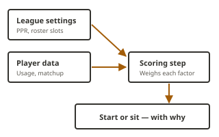

Set your lineup fast
Read the call, set your lineup, close the tab. The whole point is that you spend Sunday morning watching football instead of arguing with a spreadsheet.
Bench Notes scores your lineup against your league's actual scoring settings, then explains the call in plain English — so you are not taking a recommendation on faith.
A fifteen-second look at how the advisor works through a single start/sit decision.
Read the call, set your lineup, close the tab. The whole point is that you spend Sunday morning watching football instead of arguing with a spreadsheet.
Every recommendation shows the score behind it, and when news changed the call, a one-line reason why. If you disagree, you can see exactly where.
PPR, roster slots, and your league's own scoring settings are read straight from Yahoo — not assumed from a generic default.

The advisor is not trying to predict the future. It weighs a short list of things that are known before kickoff and shows you how they added up:
The methodology page walks through the scoring in three steps, and it is honest about what the tool does not know.